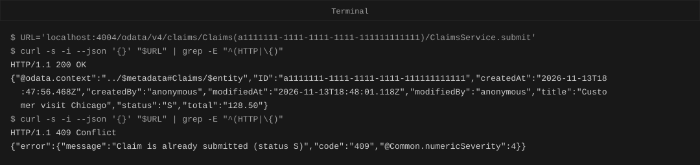
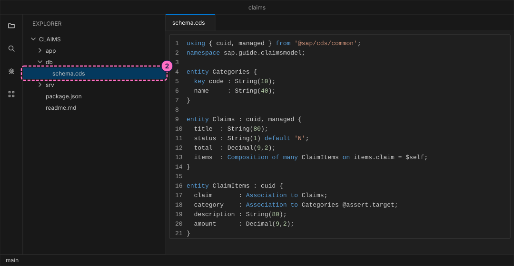
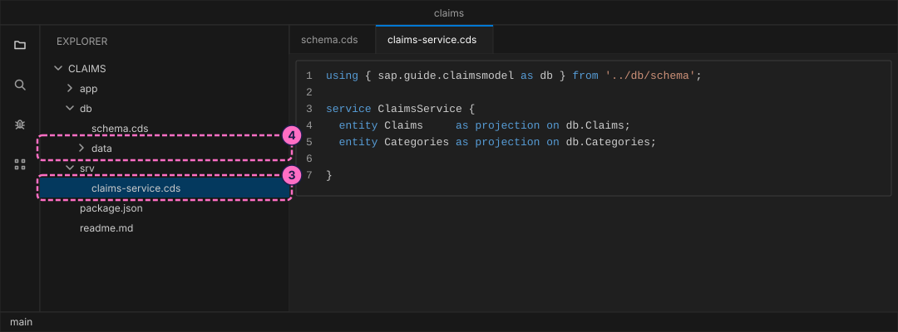
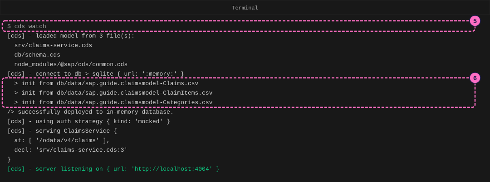
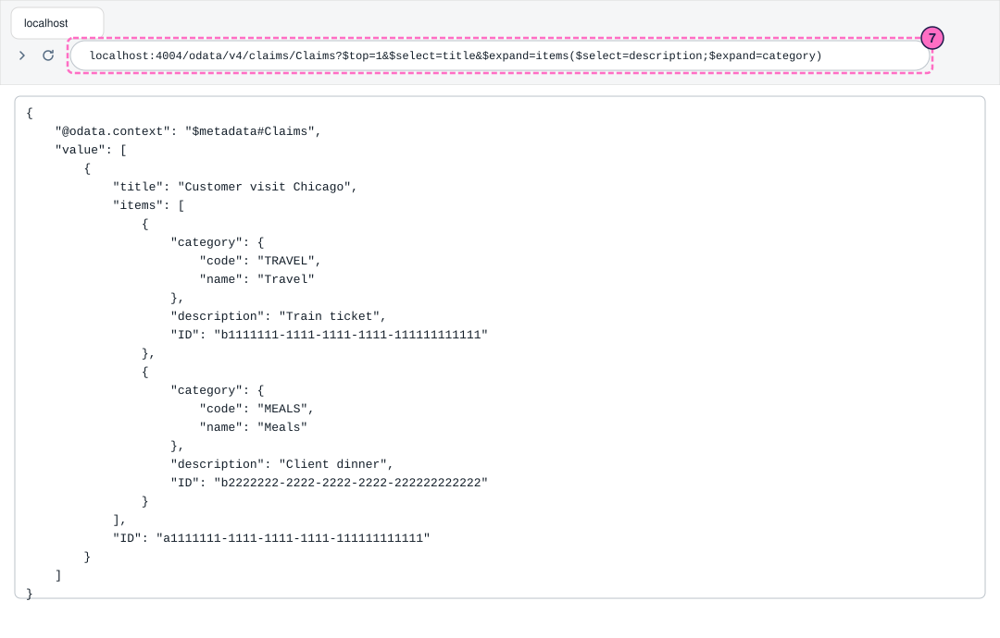
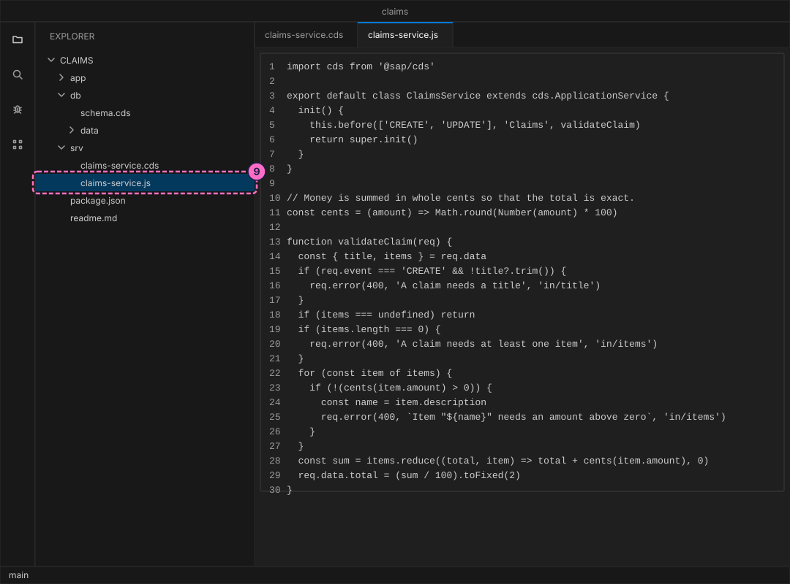
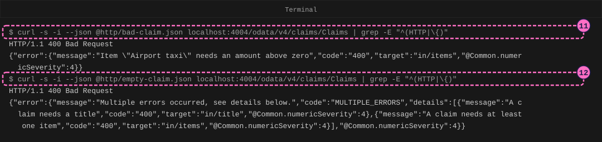
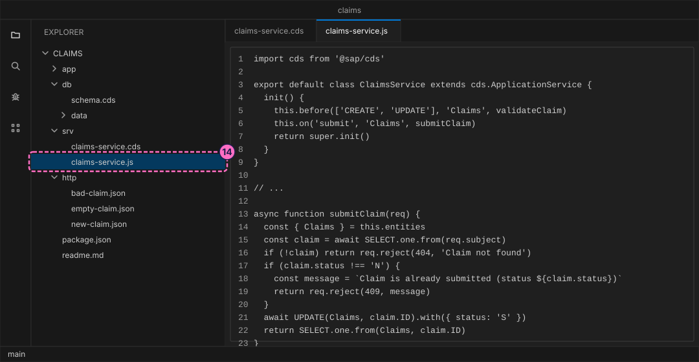

SAP Guide: Model a Domain and Add Custom Logic in CAP
|
This content was generated with the assistance of AI and should be verified against the official documentation before being relied on in production. |
Checked on 2026-11-13 against CAP Node.js 10.2 (@sap/cds 10.2.2, @sap/cds-dk 10.2.1) and Node.js 24.21.
What you build
This is a teaching model built with CAP. It is not SAP S/4HANA or SAP SuccessFactors and does not reproduce their screens.
You build a small service for expense claims in which a claim is made of parts. A claim has several items, and each item points at a category from a short list. You describe this in CDS with a composition (the items belong to their claim), an association (an item refers to a category that lives on its own) and two ready-made building blocks, cuid and managed. Then you add two pieces of custom logic in JavaScript: a validation handler that refuses bad claims and sums the total, and an action submit that moves a claim from the status N (new) to S (submitted). You try everything with curl.

Before you start
-
No account is needed: the CAP tools install from the public npm registry without signing in. Installing
@sap/cds-dkand@sap/cdsmeans accepting the SAP Developer License Agreement, version 3.2, which the packages state themselves; the lab README names it. -
Install Node.js 22.12 or newer (
node -vprints the version) and the CAP command line tools (npm install --global @sap/cds-dk, as in the guide Your First CAP Service). Use a code editor such as Visual Studio Code and a terminal. -
curlmust be version 7.82 or newer, because the guide uses its option--json.curl --versionshows it. -
Read CAP Domain Modeling and Services and Custom Handlers in Node.js first, or at least know what an entity, an association and an event handler are. The guide Your First CAP Service builds a smaller project in the same way, and you can do it first.
-
The project is built from
cds init, so nothing from an earlier guide is needed. The namesCategories,ClaimsandClaimItems, the category codes and the amounts are the model’s own and are made up.cuid,managed,Composition,Associationand@assert.targetcome from the CAP documentation pages listed under Sources. The status codesNandSare made up as well. -
The figures are drawings of the editor, the terminal and the browser, not screenshots. A highlighted box with a number marks the file, the line or the address of the step with the same number.
Steps
Create the project and the model
-
Create the project, install its dependencies and open the folder in your editor (in Visual Studio Code,
code .):cds init claims --nodejs cd claims npm installcds initprintsSuccessfully initialized CAP projectand creates the foldersapp,dbandsrv. -
Create the file
db/schema.cds. The first line importscuidandmanagedfrom CAP.cuidadds a keyIDthat CAP fills with a new unique value.managedadds the fieldscreatedAt,createdBy,modifiedAtandmodifiedBy, which CAP fills for you. The file then defines three entities:-
Categoriesis a small reference list. Its key is a code that you choose, such asTRAVEL. -
Claimshas a title, a status that starts asNand a total. The lineitems : Composition of many ClaimItems on items.claim = $selfsays that the items are parts of the claim: they are created, read and deleted together with it. Theoncondition names the backlinkclaim, which is the association on the item. -
ClaimItemshas a description and an amount, an associationclaimback to its claim and an associationcategoryto the reference entity. The annotation@assert.targetmakes CAP check that the category exists when an item is written.using { cuid, managed } from '@sap/cds/common'; namespace sap.guide.claimsmodel; entity Categories { key code : String(10); name : String(40); } entity Claims : cuid, managed { title : String(80); status : String(1) default 'N'; total : Decimal(9,2); items : Composition of many ClaimItems on items.claim = $self; } entity ClaimItems : cuid { claim : Association to Claims; category : Association to Categories @assert.target; description : String(80); amount : Decimal(9,2); }
-
Expose the model and add data
-
Create the file
srv/claims-service.cds. A service is a window onto the data.ClaimsandCategoriesare listed as projections, which show the fields unchanged.ClaimItemsis not listed, because it is a composition target: CAP exposes it by itself, but only through its claim.using { sap.guide.claimsmodel as db } from '../db/schema'; service ClaimsService { entity Claims as projection on db.Claims; entity Categories as projection on db.Categories; } -
Create the folder
db/dataand in it three CSV files. CAP loads every CSV file indb/datainto the database when the server starts. A file name is the namespace, a dash and the entity name, and the first row names the fields. The foreign keys of an association have the name of the association, an underscore and the name of the target’s key:claim_IDandcategory_code. The two claims have fixed IDs so that later commands can name them: the first is new (N), the second is already submitted (S).db/data/sap.guide.claimsmodel-Categories.csv:code,name TRAVEL,Travel MEALS,Meals LODGING,Lodgingdb/data/sap.guide.claimsmodel-Claims.csv:ID,title,status,total a1111111-1111-1111-1111-111111111111,Customer visit Chicago,N,128.50 a2222222-2222-2222-2222-222222222222,Warehouse audit Denver,S,210.00db/data/sap.guide.claimsmodel-ClaimItems.csv:ID,claim_ID,category_code,description,amount b1111111-1111-1111-1111-111111111111,a1111111-1111-1111-1111-111111111111,TRAVEL,Train ticket,98.50 b2222222-2222-2222-2222-222222222222,a1111111-1111-1111-1111-111111111111,MEALS,Client dinner,30.00 b3333333-3333-3333-3333-333333333333,a2222222-2222-2222-2222-222222222222,LODGING,Two nights,210.00Source: CAP: Providing Initial Data

Run the service
-
In the terminal, in the project folder, start the server in watch mode. Leave it running:
cds watchrestarts the server whenever you save a file.cds watch -
Read the log. CAP loads the model files, connects to a database that lives only in memory and fills it from your three CSV files. The service is served at
/odata/v4/claims(CAP derivesclaimsfrom the nameClaimsService) onhttp://localhost:4004. The lineusing auth strategy { kind: 'mocked' }says that no real login is used while you develop.
The figure leaves out the banner that
cds watchprints before the first line, a line about service bindings that your machine may or may not print, and the last line, which names the start time.
Read the structure
-
Open the claim together with its items and their categories in the browser. The query option
$expandfollows a relation and returns the related rows inside the answer:itemsis the composition andcategoryis the association of each item. Open http://localhost:4004/odata/v4/claims/Claims?$top=1&$select=title&$expand=items($select=description;$expand=category). The answer holds the claimCustomer visit Chicagowith its two items, and each item carries its category with the code and the name from the reference list. The keyIDis always part of an answer.
-
Ask for the items directly. You did not list
ClaimItemsin the service, and CAP refuses a direct request, because a composition target is reachable only through its parent. The single quotes keep the shell from touching the address.curl -s -i 'localhost:4004/odata/v4/claims/ClaimItems' | grep -E "^(HTTP|\{)"HTTP/1.1 405 Method Not Allowed {"error":{"message":"Entity \"ClaimsService.ClaimItems\" is not explicitly exposed as part of the service","code":"ENTITY_IS_AUTOEXPOSED","@Common.numericSeverity":4}}
Add a validation handler
The model cannot say that an item must cost something or that a claim needs a title. Such rules go into an event handler, a small function that CAP calls at a defined moment while it processes a request.
-
Create the file
srv/claims-service.js, next to the service definition and with the same name. CAP finds it by that name. The class extendscds.ApplicationService, which brings the built-in reading and writing, and attaches the functionvalidateClaimfor the phasebeforeof the eventsCREATEandUPDATEonClaims. The function reports each broken rule withreq.error, which records the error and goes on, so that the user sees all of them at once. When the request carries items, it also sets thetotalto the sum of their amounts. The amounts are added in whole cents, so that the sum is exact.import cds from '@sap/cds' export default class ClaimsService extends cds.ApplicationService { init() { this.before(['CREATE', 'UPDATE'], 'Claims', validateClaim) return super.init() } } // Money is summed in whole cents so that the total is exact. const cents = (amount) => Math.round(Number(amount) * 100) function validateClaim(req) { const { title, items } = req.data if (req.event === 'CREATE' && !title?.trim()) { req.error(400, 'A claim needs a title', 'in/title') } if (items === undefined) return if (items.length === 0) { req.error(400, 'A claim needs at least one item', 'in/items') } for (const item of items) { if (!(cents(item.amount) > 0)) { const name = item.description req.error(400, `Item "${name}" needs an amount above zero`, 'in/items') } } const sum = items.reduce((total, item) => total + cents(item.amount), 0) req.data.total = (sum / 100).toFixed(2) }
-
Save the file.
cds watchrestarts, and its log now shows the lineimpl: 'srv/claims-service.js'next to the service. Create the folderhttpand in it the filehttp/new-claim.json, a claim with two items. One request creates the claim and its items together, which is called a deep insert, and the claim has nototalyet:{ "title": "Supplier meeting Austin", "items": [ { "category_code": "TRAVEL", "description": "Flight", "amount": 220.00 }, { "category_code": "MEALS", "description": "Lunch", "amount": 24.75 } ] }Post it. The handler fills the
total,statuskeeps its defaultN, and CAP adds theIDvalues and themanagedfields. TheIDvalues and the time stamps of your run differ from the ones shown here.curl -s -i --json @http/new-claim.json localhost:4004/odata/v4/claims/Claims | grep -E "^(HTTP|\{)"HTTP/1.1 201 Created {"@odata.context":"$metadata#Claims/$entity","ID":"4e105e1f-8b51-4d35-853e-1a1cea101f41","createdAt":"2026-11-13T18:48:01.093Z","createdBy":"anonymous","modifiedAt":"2026-11-13T18:48:01.093Z","modifiedBy":"anonymous","title":"Supplier meeting Austin","status":"N","total":"244.75","items":[{"ID":"61b13497-480e-4d80-a752-1b2d34e610c8","claim_ID":"4e105e1f-8b51-4d35-853e-1a1cea101f41","category_code":"TRAVEL","description":"Flight","amount":"220.00"},{"ID":"1146d853-9b7e-4d7e-9c2e-49388683cdc9","claim_ID":"4e105e1f-8b51-4d35-853e-1a1cea101f41","category_code":"MEALS","description":"Lunch","amount":"24.75"}]}The total is 244.75, the sum of 220.00 and 24.75. You sent no total, and the items got their
claim_IDfrom the composition. -
Create
http/bad-claim.json, a claim whose only item has a negative amount, and post it. The handler refuses the request with HTTP 400 and the message that it wrote.{ "title": "Taxi rides", "items": [ { "category_code": "TRAVEL", "description": "Airport taxi", "amount": -18.00 } ] }curl -s -i --json @http/bad-claim.json localhost:4004/odata/v4/claims/Claims | grep -E "^(HTTP|\{)" -
Create
http/empty-claim.json, a claim with a blank title and no items, and post it. It breaks two rules, and the answer holds both: the codeMULTIPLE_ERRORSand a listdetailswith one entry for eachreq.errorcall, each with its own target.{ "title": " ", "items": [] }curl -s -i --json @http/empty-claim.json localhost:4004/odata/v4/claims/Claims | grep -E "^(HTTP|\{)"
Each answer is cut to the status line and the body, and the figure wraps the long lines the way a terminal does.
Add an action
An action is an operation that the service offers besides reading and writing. A bound action works on one row of an entity: here submit works on one claim.
-
Open
srv/claims-service.cdsand add the block at the end of the service. It declares the actionsubmitonClaims. The action takes no input and returns the claim. The file now reads:using { sap.guide.claimsmodel as db } from '../db/schema'; service ClaimsService { entity Claims as projection on db.Claims; entity Categories as projection on db.Categories; // tag::action[] extend entity Claims with actions { action submit() returns Claims; } // end::action[] } -
Open
srv/claims-service.js. Ininit(), add one line beforereturn super.init(). It attaches the functionsubmitClaimfor the eventsubmitofClaims, withon, the phase that does the work of a request:this.on('submit', 'Claims', submitClaim)At the end of the file, add the function itself.
req.subjectis a reference to the one row that the request addresses, soSELECT.one.from(req.subject)reads the claim. A claim whose status is notNis refused withreq.reject, which throws the error at once, and the status 409 means conflict. Otherwise the function sets the status toSand returns the claim.async function submitClaim(req) { const { Claims } = this.entities const claim = await SELECT.one.from(req.subject) if (!claim) return req.reject(404, 'Claim not found') if (claim.status !== 'N') { const message = `Claim is already submitted (status ${claim.status})` return req.reject(409, message) } await UPDATE(Claims, claim.ID).with({ status: 'S' }) return SELECT.one.from(Claims, claim.ID) }
-
Call the action. In OData a bound action is called with a
POSTto the row’s address followed by the service name and the action name. The shell treats the parentheses of that address in its own way, so keep the address in single quotes. Put it into a variable, call it, and call it again:URL='localhost:4004/odata/v4/claims/Claims(a1111111-1111-1111-1111-111111111111)/ClaimsService.submit' curl -s -i --json '{}' "$URL" | grep -E "^(HTTP|\{)" curl -s -i --json '{}' "$URL" | grep -E "^(HTTP|\{)"The first call answers HTTP 200 with the claim, and its
statusis nowS. The second call answers HTTP 409 with the messageClaim is already submitted (status S). The same call for the second claim of the CSV file answers 409 at once, because that claim was submitted from the start. The result is the figure at the top of this guide.
Check the result
-
The log of
cds watchshows the linesimpl: 'srv/claims-service.js'andserver listeningand no line that starts with[ERROR]. -
The expand request returns the claim
Customer visit Chicagowith two items, each with its category. -
A claim with an item amount of zero or less, or with no title or no items, is refused with HTTP 400, and a valid claim answers 201 with the
totalfilled in. -
The first
submitanswers 200 andstatusS; the second answers 409.
Variations
-
Look at the effect of
@assert.target. With the annotation in place, post a claim with an item whosecategory_codeisNOPE: the answer is HTTP 400 with the codeASSERT_TARGETand the messageTarget with this key doesn't exist.Remove the annotation, save, and post the same request again: it answers 201 Created and stores the item with a category that does not exist. An association alone does not check its target. -
Put the rules under test. Install the test helper with
npm install --save-dev @cap-js/cds-test, add the script"test": "node --test"topackage.json(npm pkg set scripts.test="node --test"does it), createtest/service.test.jsand runnpm test. The file starts a server of its own on a free port, socds watchmay keep running. The listing is the lab’s test file:import cds from '@sap/cds' import { test } from 'node:test' import assert from 'node:assert' const { GET, POST } = cds.test(import.meta.dirname + '/..') const base = '/odata/v4/claims' const one = 'a1111111-1111-1111-1111-111111111111' const two = 'a2222222-2222-2222-2222-222222222222' const item = (description, amount, category_code = 'TRAVEL') => ({ description, amount, category_code }) const rejected = async (path, body) => { try { await POST(path, body) assert.fail('should be rejected') } catch (e) { return e.response ?? e } } test('reads a claim with its items and their categories', async () => { const query = '$expand=items($expand=category)&$orderby=title' const { data } = await GET(`${base}/Claims?${query}`) assert.equal(data.value.length, 2) assert.equal(data.value[0].items.length, 2) assert.equal(data.value[0].items[0].category.name, 'Travel') }) test('posts a claim with items in one request and sums the total', async () => { const items = [item('Flight', 220), item('Lunch', 24.75, 'MEALS')] const { status, data } = await POST(`${base}/Claims`, { title: 'Trip', items }) assert.equal(status, 201) assert.equal(data.total, '244.75') assert.equal(data.status, 'N') assert.equal(data.items.length, 2) }) test('rejects an item with an amount of zero or less', async () => { const body = { title: 'Taxi', items: [item('Ride', -18)] } const r = await rejected(`${base}/Claims`, body) assert.equal(r.status, 400) assert.match(r.data.error.message, /Item "Ride" needs an amount above zero/) }) test('collects several errors in one answer', async () => { const r = await rejected(`${base}/Claims`, { title: ' ', items: [] }) assert.equal(r.status, 400) assert.equal(r.data.error.code, 'MULTIPLE_ERRORS') assert.equal(r.data.error.details.length, 2) }) test('rejects an item with an unknown category', async () => { const body = { title: 'Odd', items: [item('X', 5, 'NOPE')] } const r = await rejected(`${base}/Claims`, body) assert.equal(r.status, 400) assert.equal(r.data.error.code, 'ASSERT_TARGET') }) test('submits a new claim once, then refuses a second submit', async () => { const url = `${base}/Claims(${one})/ClaimsService.submit` const { status, data } = await POST(url, {}) assert.equal(status, 200) assert.equal(data.status, 'S') const again = await rejected(url, {}) assert.equal(again.status, 409) assert.match(again.data.error.message, /already submitted/) }) test('refuses to submit a claim that was submitted before', async () => { const r = await rejected(`${base}/Claims(${two})/ClaimsService.submit`, {}) assert.equal(r.status, 409) })The run ends with the lines
ℹ pass 7andℹ fail 0.
What can go wrong
| Symptom | Cause | Fix |
|---|---|---|
|
The shell reads the parentheses, and in other addresses the |
Put the whole address in single quotes, as in step 15. |
The log shows |
Another program already listens on port 4004. |
Stop that program, or press Return to restart with an arbitrary port and use the port that the log names in every address of this guide. |
The claim from |
The handler file is not found. Its name differs from the service file (here |
Rename the file to |
|
A header in a CSV file names a field that the entity does not have, here |
Correct the first row of the CSV file so that each name is a field of the entity, and save. |
|
|
Read it with |
A |
An action changes data, so OData calls it with |
Send the request with |
A |
|
Use the address of step 15, with the |
Clean up
Press Ctrl+C in the terminal to stop cds watch. The database lived only in memory, so there is nothing to delete. The folder claims is yours to keep.
Where to go next
-
Previous guide: Your First CAP Service.
-
Next guide: Add a Fiori Elements App to a CAP Service.
-
Reference: CAP Domain Modeling.
-
Reference: Services and Custom Handlers in Node.js.